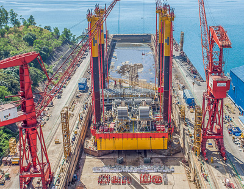

Aerial photography is a fairly new area in photography, but one that will offer a new perspective. If the idea fits your advertising or promotion campaign, count on Mario Babiera. PhotoSynthesis’ aerial photography in the Philippines will take on your project with confidence. We will provide you with print-quality results and high-definition videos.
We work with advertising agencies, and industrial, oil and gas companies. We bring photography to new heights, and we’re able to showcase the subject at an angle few have seen before. You can only trust the best professional photographer for this kind of job. Mario Babiera is the aerial photographer in Manila you’re looking to complete your project.

Countless Possibilities
As a new area in photography, aerial perspectives are yet to be fully explored. But we know that seeing things from such a point of view expands the possibilities. For instance, you can capture estates in their entirety, showcasing aspects that people don’t often see.
There are yet so much to know about aerial photography, but there’s no reason to not get stunning results from it. That’s why our clients turn to us for the most difficult projects. They know that we deliver results that are beautiful and ready to use.
We can capture a variety of media for different purposes. We can help you create tours, conduct aerial inspections, and exhibit large properties. Anything aerial photography-related is something we can do. Come to us with your idea. If you can imagine it, we can most likely do it.
Mario’s Expertise in Equipment
In aerial photography, we use drones and different photography equipment. Such tools require a different kind of mastery to capture aerial pictures well. Not all photographers can claim to know how to conduct aerial drone photography. When done well, aerial drone photography adds a new twist to your advertising efforts or company materials.
As such, Mario Babiera spent hours perfecting his method of achieving the same photo quality in drones as he does in his trusty cameras. He wants to provide the same level of professionalism to the craft, and not just offer another service. Rest assured that you can trust him with your aerial photography needs.
Showing objects up close and in detail is not the trend in photography; not anymore. People want to see everything now. With aerial drone photography services, that’s possible. You can count on us to get you results that will please you and match your requirements for the project.
Let us know your interests and requirements in aerial photography. We want to expand your horizon about this new approach to photography. We’ll provide information about what we can do and the rates of our aerial photography work. You can always count on PhotoSynthesis for any photography job you have in mind.